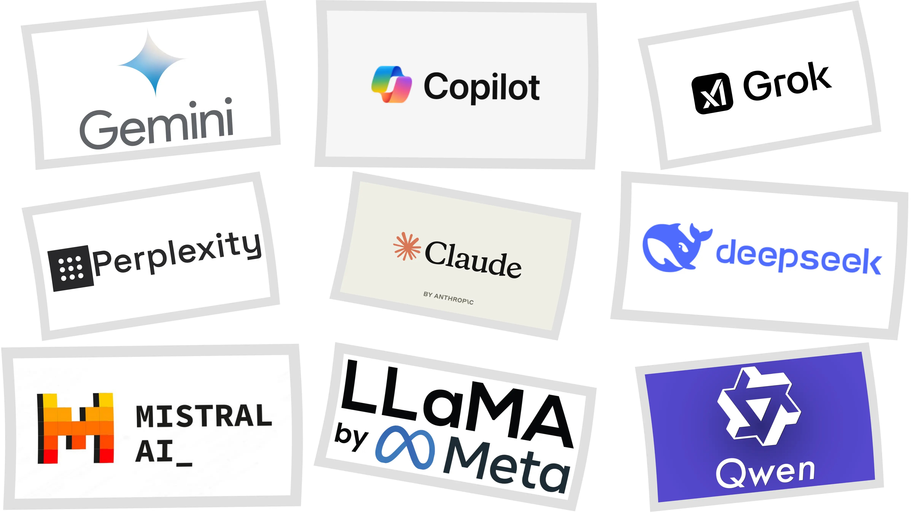

Las herramientas que están cambiando todo
Hay miles de herramientas de IA, pero algunas se han vuelto tan
populares que es imposible no haberlas escuchado nombrar. Según los
benchmarks más recientes de 2026, ninguna gana en todo, cada una tiene
su especialidad. Estas son las más populares:
ChatGPT — OpenAI
La más popular por número de usuarios, con más de 500 millones de
personas usándola cada semana. Es muy versátil y conoce casi
cualquier framework, lenguaje o tecnología. Es la mejor opción para
soluciones rápidas y uso general del día a día.
Claude — Anthropic
Según los benchmarks SWE-bench de 2026, Claude lidera en
programación compleja, debugging y razonamiento. Produce código más
limpio, comete menos errores en lógica difícil y es el favorito de
muchos desarrolladores profesionales. También es el mejor para
analizar documentos largos y escribir con calidad.
Gemini — Google
La gran fortaleza de Gemini es su contexto de 1 millón de tokens, el
más grande de todos, lo que le permite analizar proyectos enteros de
código de una sola vez. Además lidera en velocidad de respuesta y
ofrece la mejor relación precio-rendimiento. Si usas Google
Workspace, se integra perfecto con Gmail, Docs y Sheets.
Grok — xAI
Es la IA de Elon Musk, desarrollada por xAI. Lo que la diferencia
del resto es que tiene acceso en tiempo real a todo lo que pasa en X
(antes Twitter), lo que la hace muy buena para estar al día con
noticias y tendencias. En los benchmarks de 2026, Grok 4 compite de
tú a tú con Claude y GPT-5 en programación, llegando a liderar en
algunos tests. Está integrada directamente en X y también tiene su
propia app.
Microsoft Copilot
Vive dentro de Word, Excel, PowerPoint y Teams. Si tu trabajo gira
alrededor del ecosistema de Microsoft, Copilot es la opción más
cómoda. Automatiza informes, responde correos y genera
presentaciones completas sin salir de las apps que ya usas.
DeepSeek
Viene de China, es de código abierto y completamente gratuito.
Sorprendió al mundo en 2025 por alcanzar un rendimiento cercano a
los modelos de pago. Es una excelente alternativa para quienes no
quieren gastar dinero y necesitan una IA capaz.
